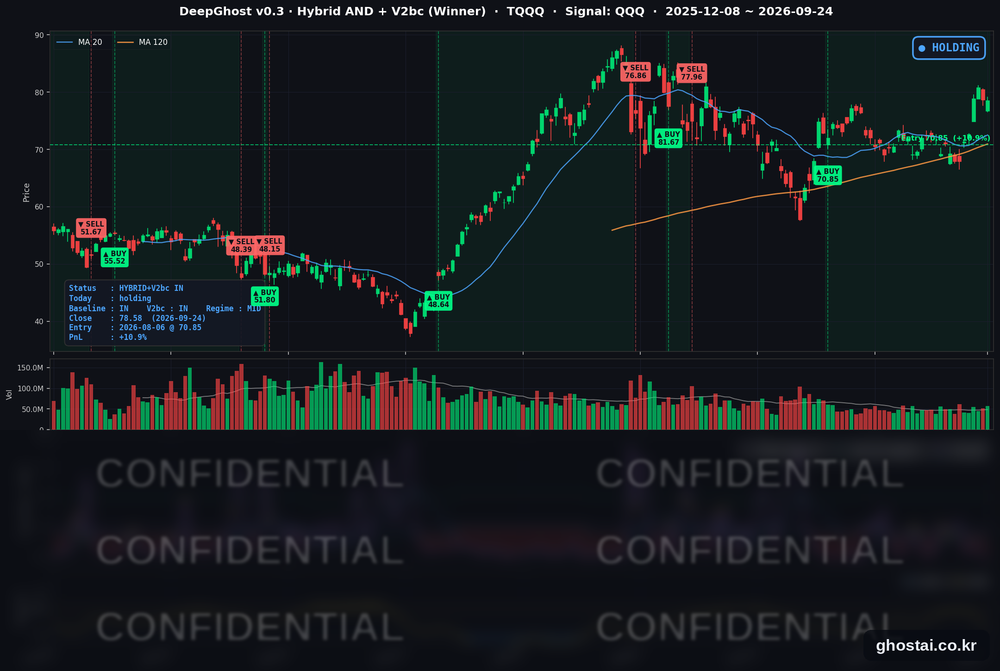

10년물 5.16%에도 나스닥은 보합
· Ghost.AI 데일리 리포트
👻 매일 시그널과 히스토리를 홈페이지에서 한눈에 → www.ghostai.co.kr
회원 페이지 안내 — 회원 가입하시면 커버리지 전 종목의 원본 시그널과 분석 레포트를 매일 확인하실 수 있습니다. 회원 페이지는 블로그·유튜브보다 먼저 업데이트됩니다. 선착순 100명을 모집하고 있으며, 이메일과 필명만으로 가입하실 수 있고 서비스 사용료는 받지 않습니다. 가입 신청 후 운영자 승인을 거쳐 이용하실 수 있습니다.
미국 10년물 국채금리가 5.162%로 이틀 연속 2007년 7월 이후 최고 종가를 새로 썼습니다. 나스닥은 약세로 출발했지만 정규장에서 낙폭을 모두 되돌려 +0.01%로 마감했습니다. 다만 오른 종목은 3분의 1에 그쳤습니다. 금리 vs. 실적 줄다리기가 팽팽합니다. 금리가 안정되어야 맘놓고 오를 수 있는 시장입니다. 전쟁이 가장 큰 변수가 되겠내요.
📊 오늘의 매매 신호
| 항목 | 내용 |
|---|---|
| 오늘 할 일 | ✅ 아무것도 안 해도 됩니다 |
| 포지션 상태 | 📈 TQQQ 보유 중 (IN POSITION) |
| 매수 진입일 | 2026-08-06 (35거래일째) |
| 진입가 → 현재가 | $70.85 → $78.58 |
| 현재 포지션 수익 | +10.91% |
TQQQ 시그널 — IN POSITION
현재 상태: 매수 포지션 유지 중 | 이번 포지션 수익 +10.91%

TQQQ는 장 초반 -2.43% 하락으로 출발했다가 정규장에서 +2.39% 올라 -0.10%(78.58달러)로 마감했습니다. 전략의 평가수익률은 전 거래일 +11.02%에서 +10.91%로 거의 변하지 않았습니다. 전략은 보유를 유지했고, 모델 기준으로 매도 신호까지의 여유는 전일보다 조금 늘었습니다.
오늘 미국 시장 — 시황 요약
지수 마감
| 지수 | 종가 | 등락률 |
|---|---|---|
| S&P 500 | 7,704.13 | -0.02% |
| 나스닥 종합 | 26,939.37 | +0.01% |
| 다우존스 | 51,349.98 | -0.31% |
| IWM (러셀 2000 ETF) | 281.66 | -0.09% |
| QQQ (나스닥100) | 741.10 | -0.01% |
| TQQQ | 78.58 | -0.10% |
QQQ는 -0.82% 갭으로 출발해 정규장에서 +0.81% 올라 갭을 거의 다 메웠습니다. 오후에 나온 두 가지 보도가 반등 재료였습니다. 미국과 이란이 호르무즈 해협 단계적 재개방과 미국의 해상 봉쇄 해제를 교환하는 방안을 논의 중이라는 로이터 보도, 그리고 베선트 재무장관의 미·중 무역 휴전 연장(11월 10일 → 내년 1월 10일) 발표입니다. 다만 S&P 500 구성종목 중 오른 종목은 33.9%로, 반등은 일부 대형 기술주에 집중됐습니다.
국채 금리 동향
| 만기 | 수익률 | 전 거래일 대비 |
|---|---|---|
| 3개월 | 4.068% | +4.0bp |
| 5년 | 5.025% | +2.8bp |
| 10년 | 5.162% | +4.8bp |
| 30년 | 5.461% | +6.0bp |
10년물과 5년물은 2007년 7월 이후, 30년물은 2004년 6월 이후 최고 종가입니다. 5년물이 5% 위에서 마감한 것도 2007년 7월 이후 처음입니다. 오후 7년물 440억 달러 입찰의 낙찰금리는 5.085%로 1993년 이후 가장 높았습니다. 전 거래일에는 5년물이 가장 많이 올랐지만 이날은 30년물이 가장 많이 올라, 금리 상승이 장기 구간으로 옮겨 갔습니다. 10년물과 3개월물의 차이는 109.4bp로 소폭 벌어졌습니다.
경기 지표도 강했습니다. 신규 실업수당 청구건수는 19.7만 건으로 57년 만의 최저권을 유지했고, 8월 신규주택판매는 연율 68.4만 채(+6.4%)로 예상(약 61.5만)을 크게 웃돌았습니다.
연준 발언 & 금리 패스
- 존 윌리엄스(John Williams) 뉴욕 연은 총재: 연말까지 한 차례 추가 인상을 예상하는 것은 "합리적인 사고방식"이라고 말했습니다. 다만 10월 인상은 확정하지 않았고, 들어오는 데이터를 보고 판단하겠다고 했습니다.
- 애나 폴슨(Anna Paulson) 필라델피아 연은 총재: 상황이 예상대로 전개되면 "다소의 추가 긴축이 정당화될 수 있다"고 밝혔습니다.
두 위원 모두 올해 투표권을 갖고 있고, 연내 추가 인상 쪽 입장입니다. 시기는 열어 둔 발언이라, 이날은 단기물보다 장기물 금리가 더 올랐습니다.
오늘의 핵심 이슈
- 금리는 이틀째 최고치, 지수는 보합. 10년물·30년물이 수십 년 만의 최고 종가를 기록했지만, 호르무즈 협상 보도와 미·중 휴전 연장에 지수는 갭 하락을 되돌렸습니다.
- 메타 +4.50%. AI 에이전트 Muse가 대행하는 거래에서 판매자에게 소액 수수료를 받는 모델과 PayPal·Walmart 연동, 전용 기기 Muse Charm을 공개했습니다. 웰스파고는 목표가를 796달러로 올렸습니다. 인텔(+3.91%)도 서버 CPU 수요 기대가 이유로 꼽히며 올랐습니다.
- 오라클 -3.47%. 뉴멕시코 대형 데이터센터의 전력 확보 지연을 이유로 불가항력 통지를 보냈다는 보도가 나왔습니다. AI 데이터센터 투자가 전력 공급 문제에 부딪히고 있다는 점이 드러났습니다.
변동성 & 투자심리
VIX는 15.67(+3.23%)로 이틀째 올랐지만, 9월 16일 FOMC 당일(17.71)보다는 낮습니다. 금리가 계속 오르는 동안에도 변동성 지표의 움직임은 크지 않았습니다. 공포탐욕지수는 약 35로 "공포" 구간입니다(전 거래일 마감 기준).
매크로 & 원자재
| 품목 | 종가 | 등락률 |
|---|---|---|
| 원유 (USO) | $153.09 | +2.86% |
| 금 (GLD) | $391.69 | -0.30% |
원유 ETF는 이틀 연속 올랐고, 호르무즈 협상 보도 뒤 장중 고점에서는 밀렸습니다. 금은 금리 상승 속에 이틀째 약세였습니다.
주요 종목 동향
| 종목 | 종가 | 등락률 | 비고 |
|---|---|---|---|
| META | 777.59 | +4.50% | Muse 수수료 모델·Muse Charm 공개 |
| INTC | 127.39 | +3.91% | 약세 출발 후 정규장에서 반등 |
| GOOGL | 342.36 | +1.34% | 전 거래일 -3.80% 뒤 일부 반등 |
| MU | 1,080.53 | +0.81% | FQ4 실적 9/30 장 마감 후 |
| NFLX | 71.72 | +0.50% | |
| AMZN | 249.38 | +0.04% | 갭 하락을 정규장에서 회복 |
| AAPL | 335.92 | -0.33% | |
| NVDA | 224.58 | -0.41% | 갭 하락 후 정규장에서 일부 회복 |
| MSFT | 497.93 | -0.53% | 500달러 아래로 |
| AVGO | 350.36 | -1.30% | 이틀 연속 하락 |
| QCOM | 194.26 | -1.51% | 정규장에서 추가 하락 |
다음 거래일 일정
- 9/25(금) 08:30 ET 8월 내구재 주문
- 9/25(금) 10:00 ET 9월 미시간대 소비자심리 확정치 — 기대 인플레이션 수정 여부가 금리 방향에 중요합니다.
Ghost.AI — Quantitative AI Investment
Model: DeepGhost v0.3 | Transformer-Based Deep Learning
Coverage: 13 tickers | Updated every trading day after US market close
⚠️ 본 자료는 정보 제공 목적으로만 작성되었으며 투자 권유가 아닙니다. 모든 투자의 책임은 투자자 본인에게 있습니다. 과거 성과가 미래 수익을 보장하지 않습니다.
[유의사항]
- 본 서비스는 불특정 다수를 대상으로 발행되는 단방향 정보 제공 서비스이며, 투자자 개인의 재산 상황·투자 목적·위험 선호도를 반영한 개별 투자 조언이 아닙니다.
- 고스트에이아이 주식회사는 고객과 쌍방향 의사소통(개별 상담, 맞춤형 자문 등)을 제공하지 않습니다.
- 본 콘텐츠는 투자 권유 또는 매매 주문의 청약·청약의 권유에 해당하지 않으며, 최종 투자 판단 및 그에 따른 손익의 책임은 전적으로 투자자 본인에게 있습니다.
고스트에이아이 주식회사